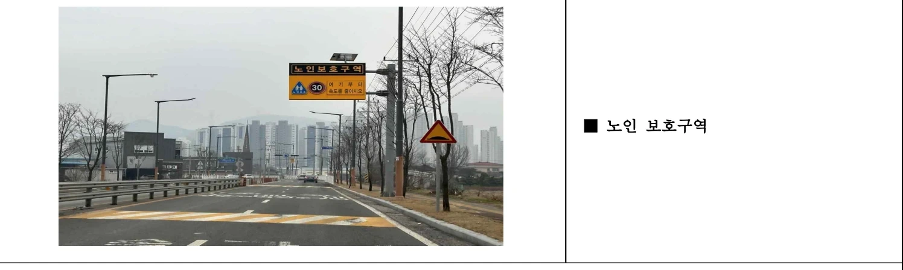

755. Hai cách lái xe nào là an toàn nhất trong tình huống sau?

- ①Liên tục nhấn còi và lái xe đi nhanh qua.
- ②Giảm tốc độ vừa đủ trước và chú ý an toàn.
- ③Dù không nhìn thấy có người cao tuổi đang đi bộ thì cũng lái xe đi chậm.
- ④Lái xe bám sát xe trước nếu có thể.
- ⑤Vì phía trước có vạch sang đường dành cho người đi bộ nên tăng tốc để nhanh chóng đi qua khu vực bảo vệ người cao tuổi.
Xem đáp án
Đáp án
② Giảm tốc độ vừa đủ trước và chú ý an toàn.
③ Dù không nhìn thấy có người cao tuổi đang đi bộ thì cũng lái xe đi chậm.
Căn cứ
Đoạn này là khu vực bảo vệ người cao tuổi nên bạn phải lái xe an toàn và giảm tốc độ xuống 30 km/h. Ngoài ra, ngay cả khi bạn không nhìn thấy người đi bộ, bạn phải lái xe chậm khi đến gần lối sang đường dành cho người đi bộ và chuẩn bị cho sự xuất hiện của người đi bộ. Vì vậy, phương pháp lái xe an toàn nhất là giảm tốc độ trước và chú ý đến an toàn (②), lái xe chậm ngay cả khi không nhìn thấy người già (③). Mặt khác, lái xe nhanh và bấm còi không cần thiết (①), bám sát phía sau xe phía trước (④), hoặc phóng nhanh ra khỏi khu vực (⑤) đều là những phương pháp lái xe không an toàn.
Phần căn cứ là bản dịch máy để tham khảo.